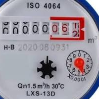

Gennaro Cassano
Guide
Come cancella
re la cache degli aggiornamenti di windows
Come creare una pendrive di boot con clonezilla
Come eliminare GRUB in dual boot tra ubuntu e windows
Come formattare una pendrive
Come creare una usb di boot con diskpart per installare windows senza software esterni
Come verificare l'HASH di un file
Aiace Telamonio
Aiace Telamonio
Applicazioni

Come calcolare il consumo di acqua tenendo conto delle varie tariffe
Come calcolare il consumo di acqua supponendo una tariffa unica
Come calcolare lo sconto complessivo a seguito di due sconti successivi
Problemi sugli sconti in varie situazioni
Calcolo del volume di liquido contenuto in un serbatoio cilindrico in posizione orizzontale